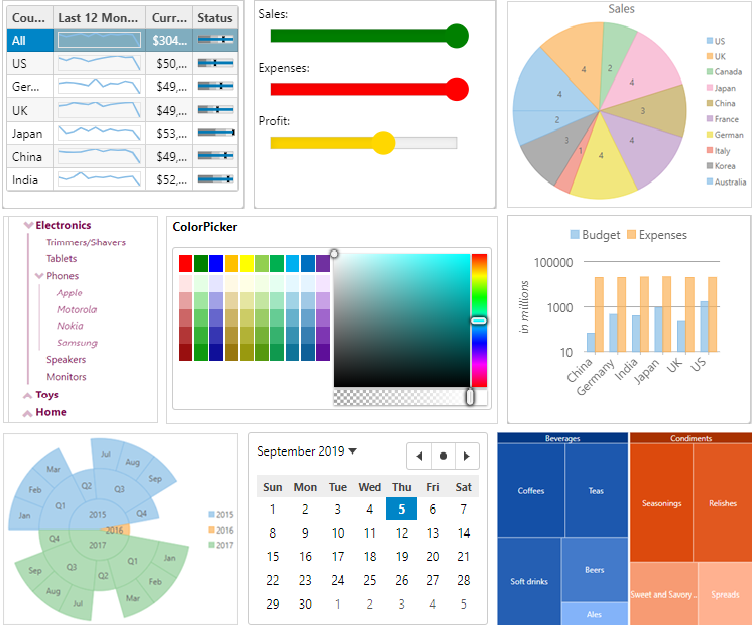

Technical Writing & Documentation Management
📚Active Reports
I spent nearly two years documenting new features and maintaining the documentation for ActiveReports.NET, a comprehensive reporting solution. I worked on documenting reports for various platforms such as .NET Framework, Blazor, WinForms, WPF, ASP.NET MVC, and more.
- Key Activities:
- Collaborated with SMEs and product managers to document new features in each release.
- Created user-friendly guides and tutorials on how to design, implement, and deliver dynamic reports using ActiveReports.NET.
- Developed troubleshooting content and FAQs to assist developers with common reporting issues.
- Outcome: The updated documentation helped users quickly learn how to implement reporting solutions, Resulting in fewer support requests and increased user satisfaction.
ASP.NET Core MVC
For the ASP.NET Core MVC, I authored user guides and documentation focused on modern UI controls and how they integrate with ASP.NET Core MVC applications. This collection of UI controls leverages cutting-edge technologies like HTML5, CSS, and ECMA5, ensuring full compatibility with modern browsers.
- Key Activities:
- Collaborated with product managers to understand key features and scenarios for implementing the MVC Edition in real-world applications.
- Created step-by-step instructions for developers to implement the controls in their projects.
- Developed code samples demonstrating how to integrate these controls with ASP.NET Core MVC applications.
- Ensured that the documentation supported legacy browsers while highlighting the latest features of the product.
- Outcome: The guide provided users with clear and actionable steps to quickly adopt the ASP.NET MVC Edition, significantly improving onboarding for new users.
Xamarin
I documented the Xamarin, a collection of cross-platform UI controls for Xamarin.iOS, Xamarin.Android, and Xamarin.Forms. This documentation was crucial in guiding developers through the use of Xamarin controls to create native experiences across multiple platforms.
- Key Activities:
- Worked closely with the development team to understand how Xamarin Edition optimized the user experience across iOS, Android, and UWP.
- Created clear, concise examples of integrating Xamarin controls into mobile applications.
- Coordinated with SMEs to ensure that platform-specific nuances were addressed in the documentation.
- Outcome: The documentation enabled developers to quickly grasp the potential of Xamarin Edition and integrate it into their projects with minimal friction.
Document Solutions for PDF (DsPdf)
I developed documentation for Document Solutions for PDF (DsPdf), focusing on how developers can read, create, modify, and save PDF files using the library. The content was aimed at developers working on cross-platform applications, offering a wide range of PDF-related functionality.
- Key Activities:
- Conducted thorough research on Adobe PDF 2.0 specification and translated this into clear, actionable documentation for developers.
- Created code samples for a variety of PDF use cases such as creating PDFs, adding annotations, and embedding images and barcodes.
- Worked with the product manager to ensure the documentation highlighted new features and improvements.
- Outcome: The documentation helped developers leverage the full capabilities of DsPdf, leading to increased adoption and fewer support inquiries.
ASP.NET Core Web API Edition
I authored documentation for ComponentOne Studio Web API Edition, a suite of HTTP services built on ASP.NET Web API and ASP.NET Core. This documentation focused on how to create and manage Web API services (including RESTful services).
- Key Activities:
- Worked with development teams to understand the architecture of Web API Edition and its various use cases.
- Created detailed guides and tutorials to help users set up and configure Web API services.
- Created code samples to demonstrate common API usage patterns and best practices.
- Outcome: The documentation helped users effectively integrate Web API Edition into their applications, improving their ability to create powerful, scalable services.
WinForms
For the WinForms Edition, I created a comprehensive guide detailing how users could leverage over 65 smart .NET Windows Forms controls. The focus was on helping users utilize these controls to build feature-rich desktop applications with minimal coding.
- Key Activities:
- Planned the structure of the guide to provide a logical flow, starting from installation and basic configuration to advanced features and customizations.
- Created and tested code samples, ensuring that they demonstrated the key features of the WinForms Edition controls.
- Coordinated with SMEs to verify that the content accurately reflected the capabilities of the product.
- Outcome: The documentation effectively supported users through their first steps with WinForms Edition and provided troubleshooting tips to resolve common issues.
ASP.NET Web Forms
I planned and created a detailed "Getting Started" guide for the ASP.NET Web Forms Edition, which is a collection of over 40 ready-to-use, customizable controls built with modern web technologies. This guide helps users get up to speed with using the controls in their ASP.NET projects. I coordinated with SMEs to ensure the technical accuracy of the content and collaborated with product managers to ensure that the documentation aligned with product features.
- Key Activities:
- Conducted research and gathered requirements from development teams to understand the core features of Web Forms Edition.
- Created code samples to demonstrate the use of ASP.NET controls, Extenders, and MVC tools.
- Worked with SMEs to refine complex concepts and ensure that the explanations were user-friendly.
- Collaborated with the design team to create visually appealing and clear documentation.
- Outcome: The documentation received positive feedback for its clarity, which helped users quickly integrate Web Forms Edition into their projects.
⚙️ Tools
- Madcap Flare
- Document X!
- Adobe FrameMaker
- Microsoft Word
- Google Docs
- XML Editor (e.g., Oxygen XML Editor)
- Confluence
- Microsoft Visio
- Writers' Rooms (e.g., ProProfs Knowledge Base)
- WordPress
- Drupal
- SharePoint
- Document360
- Zendesk (for knowledge base management)
- HubSpot Knowledge Base
- Jira
- Confluence
- Monday.com
- GitHub
- GitLab
- Team Foundation Server
- Canva
- Snagit (for screenshots and screen recording)
- Figma
- Markdown
- HTML/CSS
- Visual Studio Code
- Sublime Text
- Notepad++
- Atom